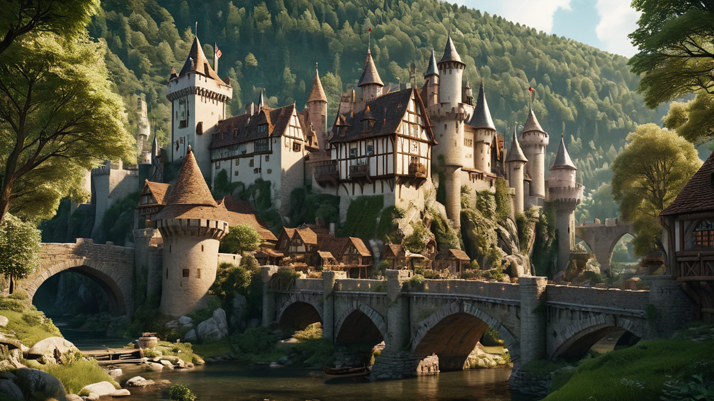

Hello there, my name is ZethalMC. When I'm not navigating the challenges of high school, you'll likely find
me immersed in the world of programming, gaming, and exploring the fascinating field of AI. The languages I'm
familiar with include Python, HTML, CSS, and JavaScript. I love creating digital landscapes, bringing things
to life, and experimenting with artificial intelligence.
On the gaming front, my playground is mainly Minecraft, and I've crafted many adventures in this game. You can
catch me hanging out on Discord too, where I'm always up for a chat about really everything.
In the pursuit of my interests, I find beauty in perfection, symmetry, and neatness, although I'm not one to
lose sleep over it. I appreciate order, but I'm not afraid to embrace a bit of chaos if it leads to a more
exciting outcome.
As I navigate through high school, I'm eagerly anticipating the future and the opportunities it holds for both
my programming endeavors and gaming adventures. I'm looking forward to the insights and adventures that are
waiting for me, even though my list of accomplishments is still evolving.
Projects

ZethalMC's Projects
Project Name
Description
Link
Eleysae Website
Website for Eleysae, the town of the Boaterists on the Stoneworks
Minecraft server.
Book Converter
A web-based tool designed to convert ebooks, articles, and other written content into
Stendhal-compatible books for Minecraft, allowing users to easily import and share their favorite texts
in-game.
Discord is the place to get a quick reply. You can call me Zethal_, Zethal, or simply Ze.
Servers
The servers I play in.
Stoneworks
I am an enthusiastic player on the Stoneworks Minecraft server, where I am especially active in writing,
roleplay and developing lore, called community
storytelling. As a moderator on Stoneworks, I also help to maintain a fair and
positive environment, to ensure players of a friendly environment on Discord, as well as in the Minecraft
server.
One of my passions on Stoneworks is writing lore. I take great pleasure in developing
history, culture and science. Additionally, I enjoy creating stories for various guilds and corporations
affiliated with Stoneworks, which I am sometimes hired to by people.
For me, the Stoneworks community is truly remarkable. It is full of creative and truly dedicated
individuals, most of whom share a love of lore, art and role-playing. The events on the server are always a
highlight for me. These provide opportunities for me to participate in large-scale roleplaying and, more
importantly, to create new lore to write about. Being part of this community has been an incredibly
enjoyable experience and I am excited to continue contributing to its growth and success.